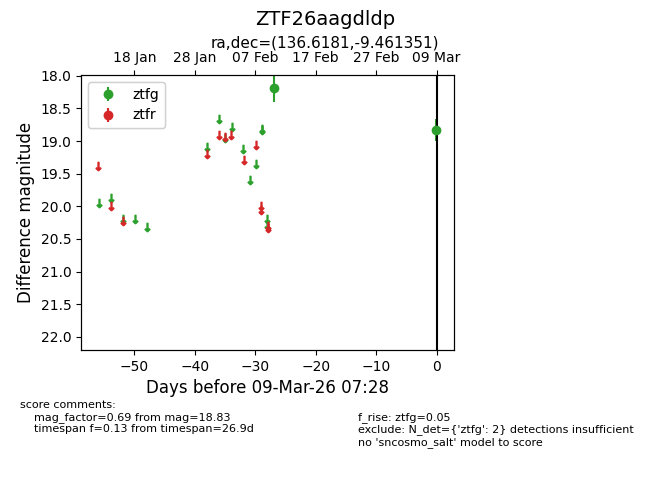
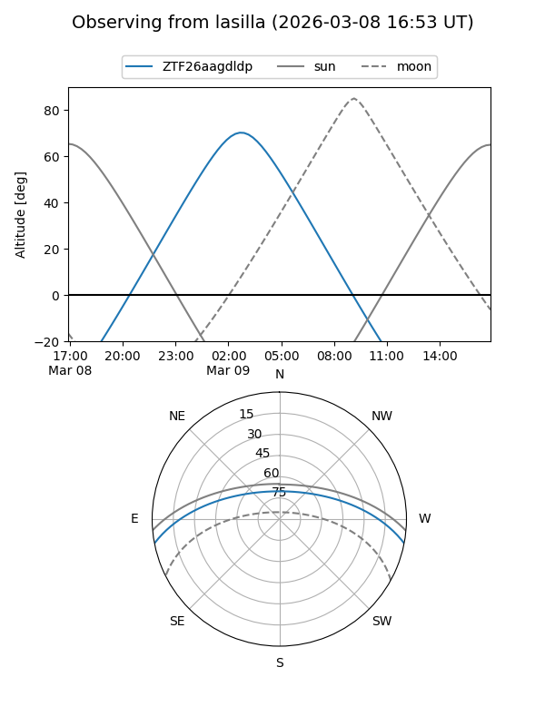
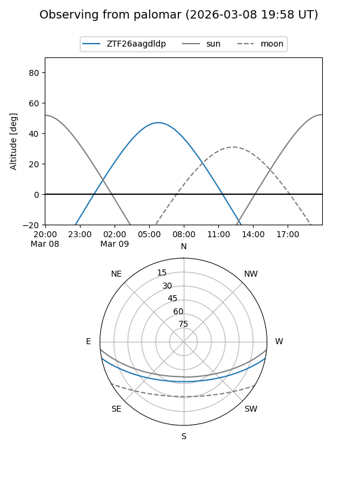

ZTF26aagdldp
Target ZTF26aagdldp at 2026-03-09 07:29
Aliases and brokers:
FINK: link
Lasair: link
ALeRCE: link
alt names
ZTF26aagdldp (ztf,fink_ztf)
Coordinates:
equatorial (ra, dec) = 136.6181,-9.46135
equatorial (HMS+DMS) = 09:06:28.33,-09:27:40.86
galactic (l, b) = (238.7205,+24.38578)
Flags:
Photometry:
last ztfg=18.83
2 ztfg detections
Lightcurve

Visibility


Additional plots